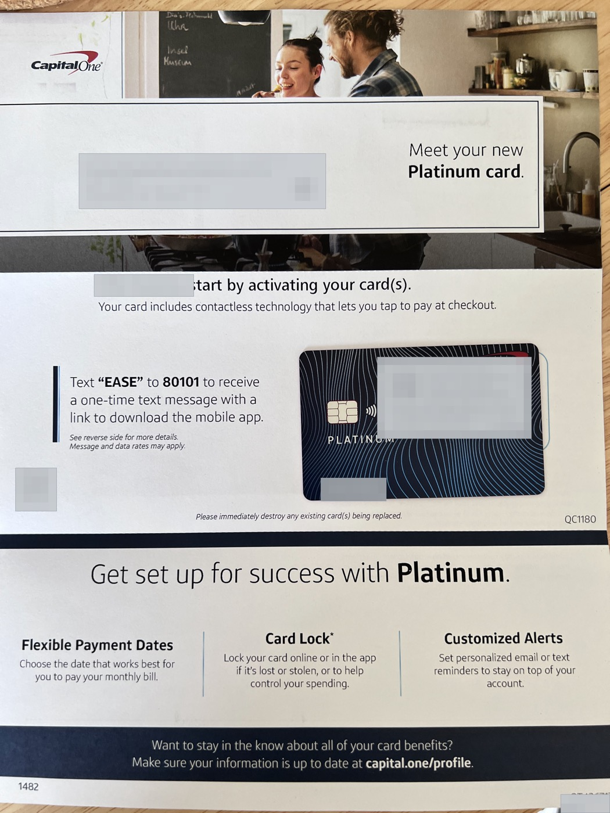
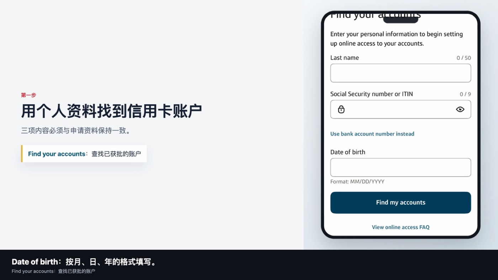
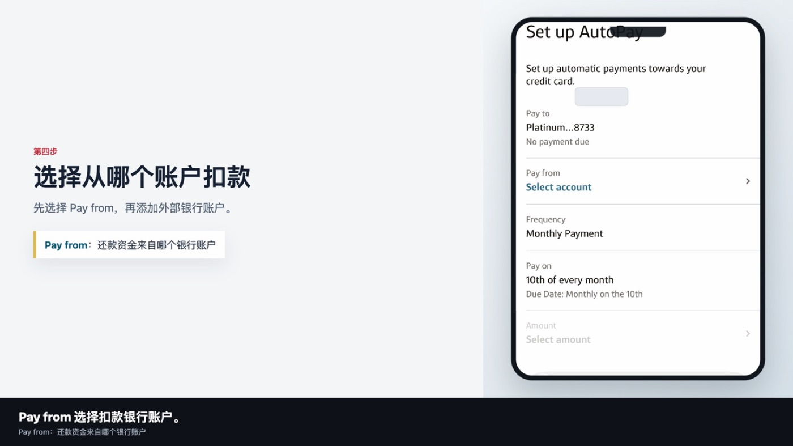
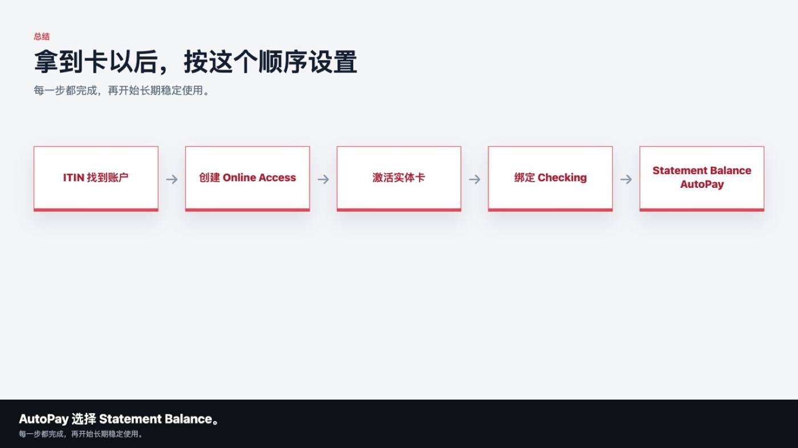

先说明：这是我的真实账户设置记录，不是 Capital One 对所有用户的统一操作承诺。App 页面、验证方式、扣款选项和日期可能因账户或版本不同而变化，请以本人账户页面和官方条款为准。
今天这期，我记录拿到 Capital One Platinum 实体卡以后，怎么完成账户注册、卡片激活、绑定还款账户，以及开启 AutoPay。
我会按照自己的真实操作顺序，一步一步说明：怎么用 ITIN 找到自己的账户，怎么注册 Capital One App，怎么激活实体卡，以及 AutoPay 应该怎样理解和选择。

操作前：保持设备与网络环境稳定
我的实际操作使用同一台设备、自己长期管理的美国手机号和稳定网络，中间没有频繁切换设备、地区或 IP。这只是我的真实操作环境，不是 Capital One 公开规定的硬性条件。
更通用的原则，是保持稳定、干净、长期一致的网络环境和登录习惯，避免频繁切换地区、设备和 IP，减少账户安全验证和风控误判。不要把 VPN 或住宅 IP 理解为必须条件，也不要把网络设置用于绕过审核或安全验证。
第一步：注册 Capital One Online Access
点击 Set up online access
打开 Capital One App 后，先看到登录页面。因为这是我的第一张 Capital One 信用卡，当时还没有用户名和密码，所以我点击下方的 Set up online access，开通网上账户。
填写资料查找账户
进入 Find your accounts 页面后，需要填写三项资料：
- Last name：申请信用卡时使用的姓氏，和申请资料保持一致。
- Social Security number or ITIN：有 SSN 就按本人资料填写 SSN；像我一样使用 ITIN 申请，则填写自己的九位 ITIN。
- Date of birth：按页面要求使用月、日、年的美国日期格式填写本人真实出生日期。
全部填写完成后，我逐项核对，再点击 Find my accounts，让系统查找已经批准的 Capital One 账户。示例日期只用于解释格式，不能代替任何人的真实资料。

第二步：关联 Platinum 信用卡
确认需要开通网上访问的账户
系统找到我的账户后，页面显示 Select accounts to enroll。我确认页面显示的是自己的 Capital One Platinum，再点击 Continue。账户末四位只用于本人核对，不应在公开页面、邮件或社交媒体中展示。
创建用户名和密码
接下来，系统要求创建 Username 和 Password。我使用自己能够长期管理、同时足够安全的组合，并且不和其他网站重复使用同一密码。填写完成后，我阅读 Online Servicing Terms 和 Privacy Policy，再点击 Agree and continue。
系统随后显示 Welcome to Platinum 和 Your account is ready，说明 Platinum 已经关联到新建的网上账户，可以使用刚创建的用户名和密码登录 App。
账户安全：不要截图或公开 ITIN、出生日期、用户名、密码、验证码、完整卡号、安全码、Routing Number 和银行账户号码。建议为账户邮箱和密码管理器开启 2FA，并只从 Capital One 官方 App 或官网登录。
第三步：激活实体信用卡
进入激活入口
登录 Capital One App 后，首页出现 Activate your new card 提示。我点击 Activate card；同一个入口也可以在 Action items 中找到。
选择适合本人页面的验证方式
我的 App 首先提示把实体卡靠近手机，通过 NFC 识别并激活。我当时没有使用贴卡方式，而是点击 Activate another way，通过账户中已经登记的美国手机号接收短信验证码。
提交验证码后，页面显示 Your Platinum cards are all activated and ready to use，说明实体卡已经激活。其他用户看到的验证选项可能不同，应按照本人页面提供的方式完成。

第四步：绑定还款银行账户
先设置还款，再开始使用
信用卡激活后，我没有马上刷卡，而是先把还款方式设置好。进入 Platinum 账户后，我从 Choose how you pay 进入账户付款设置；当时页面显示 AutoPay: OFF，表示自动还款尚未开启。
添加 External Account
进入 Set up AutoPay 后，我先确认 Pay to 是自己的 Capital One Platinum，再从 Pay from 选择还款银行账户。如果还没有绑定账户，就添加一个新的外部银行账户。
我绑定的是个人支票账户，因此 Account Type 选择 Personal Checking。随后按本人银行资料填写九位 Bank Routing or ABA Number、Account Number，并再次输入账户号码完成核对。Make Primary Payment Account 可用于设置默认还款账户，Nickname 是可选备注。
Routing Number 和 Account Number 必须逐位检查，还款账户也要持续保留足够余额。不要从陌生邮件或非官方链接进入绑定页面。
第五步：开启 AutoPay
理解三种自动还款金额
绑定还款账户后，我回到 AutoPay 设置页面，核对 Pay from、付款频率和 Pay on 日期，再选择每月自动还款金额。我的页面提供三种选择：
- Minimum payment：每月自动偿还账单要求的最低金额。它通常能帮助避免直接逾期，但未还清余额可能继续产生利息。
- Statement balance：自动偿还账单生成时的本期账单余额。
- Fixed：每月偿还自己设定的固定金额。如果账单金额高于固定还款额，剩余部分可能没有还清。
Capital One 当前官方帮助页也列出了 Minimum payment、Statement balance 和 Fixed payment 三种选项，并要求选择付款账户、金额与日期。界面和具体规则可能变化，请以设置时的官方页面为准。
为什么我选择 Statement Balance
我的目标是正常使用、按时全额偿还当期账单，并避免不必要的利息，所以我选择 Statement balance。Minimum payment 只满足最低要求，Fixed 也可能低于实际账单金额；Statement balance 更符合我的个人使用计划。
这不是对所有人的统一建议。每个人都应根据现金流、卡片条款和本人账户选项判断。AutoPay 只是降低忘记付款风险的工具，不保证付款一定成功，也不保证信用分或额度变化。
授权并再次核对
选择 Statement balance 后，我再次检查 Pay to、Pay from、Pay on 和 Amount，确认付款账户、扣款日期和还款金额都正确，再完成 Agree and authorize AutoPay 授权。
第六步：确认 AutoPay 设置成功
设置完成后，Capital One 显示 You’ve set up AutoPay，并列出还款信用卡、扣款账户、频率、日期和金额。我的账户设置为每月还款一次，在本人页面显示的 Payment Due Date 扣款，金额选择 Statement balance。
返回账户设置页后，Choose how you pay 和 Set up AutoPay 前面出现完成标记。对我来说，只有确认页面和计划付款都正常显示，才算完成设置。
第七步：账单日和还款日
Statement Closing Date
Statement Closing Date 或 Statement Date 是账单周期结束并生成账单的日期。账单生成时，会得到 Statement Balance，也就是该账单周期结算出的本期账单余额。
Payment Due Date
Payment Due Date 是最后还款日。我的账户页面当时显示每月 10 号，但这只是我的个人账户日期，不代表所有 Capital One 持卡人都相同。开启 AutoPay 后，系统会按照本人设置和账户规则处理上一期账单的付款。
简单理解：先消费，账单周期结束后生成账单，再在还款日前按要求完成付款。
Current Balance 和 Statement Balance
Current Balance 是当前账户余额，会随着新的消费、退款和付款变化；Statement Balance 是上一个账单周期结束时固定下来的账单余额。
因此，即使 AutoPay 选择了 Statement Balance，账户仍可能因为账单日后的新消费显示 Current Balance。这并不自动代表 AutoPay 少还了，新消费通常会进入下一期账单。Capital One 官方说明也将 Statement Balance 定义为账单周期结束时的余额，而 Current Balance 是更接近实时的账户总额。
第八步：设置完成后的检查
核对第一期计划付款
AutoPay 设置完成后，正常情况下不需要每月重新发起付款。但第一期账单生成以后，我仍会进入 Capital One App 的 Payment Activity，确认计划扣款已经出现，并核对扣款日期、金额和绑定账户。
AutoPay 不能代替主动检查
我还会检查还款账户是否有足够余额。账户号码错误、余额不足、银行账户异常或付款失败，都可能导致没有按时完成还款。
因此，我让 AutoPay 负责按计划付款，同时每月检查一次账单、付款状态和银行账户余额。

完整设置顺序
- 使用本人姓氏、ITIN 和出生日期查找已经批准的账户。
- 创建 Capital One 用户名和密码，开通 Online Access，并把 Platinum 关联到该账户。
- 通过 App 激活实体信用卡；我选择其他验证方式，通过已登记手机号接收验证码。
- 绑定本人美国 Checking Account 作为还款账户，逐位核对 Routing Number 和 Account Number。
- 开启 AutoPay，并根据个人计划选择 Statement balance。
- 确认自动扣款日期，并在第一期账单后检查计划付款和银行账户余额。
整个过程中，我保持设备、手机号和登录环境长期一致，没有频繁切换。AutoPay 能降低忘记还款的风险，但仍要确保还款账户余额充足，并定期检查计划付款是否成功。
免责声明：本文仅为 Evan 的个人经验分享和信息整理，不构成金融、税务或法律建议。不同账户的页面、验证方式、账单日期、还款选项和条款可能不同，请以 Capital One 官方信息和本人账户页面为准。AutoPay 不保证付款成功、信用分提升、额度增加或任何审批结果。
隐私提醒：请勿通过邮件或公开渠道发送 ITIN、SSN、出生日期、验证码、密码、完整卡号、安全码、银行 Routing Number、账户号码或银行账单等敏感资料。
前后篇
上一篇：用 ITIN 申请 Capital One Platinum：从准备资料到获批 $500 的真实流程